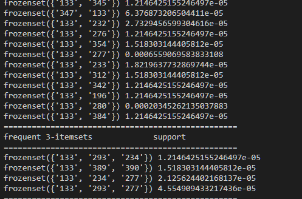

全国酒驾数据展示

这是个人在北京理工大学软件工程数据挖掘2020课程上的大作业。主题是对给定数据集中的数据进行信息挖掘和展示，展示效果主要为数据统计和地域分布。其中数据集来自法研杯的危险驾驶数据集，数据集收录的截止时间约为2017年。其中的数据有罪名、刑期、刑法条例、犯罪人姓名（隐匿）、罚款数和审判文书。
总述
在人们的生活水平日渐提高的同时，全国的汽车数量也在不断增长，随之而来的是各种交通问题的不断发生。比如，在2019年，对危险驾驶的起诉人数已经超过盗窃罪、诈骗罪和寻衅滋事罪，成为了年度起诉人数最多的罪行。
因此，我通过法研杯中的数据集，对危险驾驶中的酒驾进行了统计和可视化，以及一些简单的分析。
全国酒驾统计数
由于数据集是从所有案件的统计中截取的一部分数据，所以数据集中不仅仅只有危险驾驶的案例。所以首先要从数据集中提取出酒驾的案例。对此，我的提取方案为正则匹配。虽然对于很多任务类似任务而言，用神经网络做的抽取式文本摘要更有 普适价值，效果也可能更好，但是鉴于司法文书的规范性较强，且数据集信息清晰，正则匹配的方法做出的效果也在接受范围之内。
正则匹配
相对于npm中抽取式文本摘要，正则匹配的弱处主要体现在提取特征上。正则匹配需要人工提取特征，这意味着其准确度和普适度都较弱。在酒驾这个特定任务中，重要的是准确度。而提高正则匹配的准确度，需要准确地找到自然语言中酒驾的特征。 不同于其他自然语言，在司法文书中，酒驾的特征是较为明确的。首先是判决依据，酒驾的判决依据来自于对血液或者呼气中的酒精含量的检测值。所以在司法文书大多数都很规范的前提下， 我们可以查找关键字“血液”、“乙醇”和“\100mg”等，通过这些关键字，再结合“133”这一刑法条例，可以从危险驾驶数据中较为准确地找到酒驾案例。
但仅仅有关键字，还不足以精确提取。在一篇司法文书中，可以在开头提到“血液”，在结尾提到“酒”，况且“\100mg”并不是每次都会出现，实际上，很多案例都是写的“\mg”、“\毫克”、“\ml”等等， 所以，我们需要将关键字组合起来，以形成精确的关系。综上所述，我的方案是在危险驾驶案例下查找“血”以及在0-30个字符内匹配“\”。当然，正则表达式并不止这一个，这里只是解释思路。
数据统计
得到案例后，接下来是提取时间。虽然司法文书对于时间的记录较为规范，但是还是有部分的错误日期。为了规范化，可以将字符串转为python中的时间格式，并用try判断是否能提取date。最终提取的结果很好，获得的数据 有333347个，而未获得的只有586个。
最难的部分在于时间的拟合上。司法文书中的时间有三个精确维度：年、月、日。其中年在333347份有效数据中占了243653份，月有24744份，而日为64860份。这就牵扯到一个关键问题了：面对不同精度间如此大的差距， 应该如何表现数据。首先是可以将数据降维，将年月日都降为年。这样能保证数据的正确性，但是要看到所有的年份只有7个，这样的降维对于信息的损耗太大，不利于从中提取信息。若选则月为基准，年通过统计方法变为月份， 日降为月，则保留了信息，也统一了维度。但是这样未免显得有些单调。而将所有数据分配到日上，则有面对如下问题：如何将年变为日。日比年的信息多了很多，而年的数量又远大于日。及时能将年变为日，也不利于预测，因为在日的维度上存在 太多的0值，在做时间序列处理时很难拟合。最终我选择了展示两个图：一个是月份为基准的图，主要用来做预测。另一个是以日为基准的图，用来展示信息。
日为基准的图
数据分析
从数据中可以看出，在2011年酒驾入刑后，我国开始严查酒驾，从此酒驾案例飙升。从数据的日期分布中还能看出，酒驾案件完全集中在春节前后。对此可以有以下推测：首先，春节前后大家的应酬 很多，而醉后坐公共交通工具或租车都不方便，由此酒驾案例上升。其次，春节是重大节日，是亲朋好友团聚的时刻，交警会重点在这时抓酒驾，为假期保驾护航。
酒驾案件地域分布
预测酒驾案例的分布有地域的分布。因为从人文方面考虑，不同的地方有不同的文化，而酒文化也是中国的一个文化。
提取过程
地域数据的分类上，首先是按照年份进行划分，在此基础上进行地域划分。数据划分过程中，面对的主要问题包含以下方面：首先是对地点的提取，对此我的方法是下载中国行政区域文件，从中按照名称匹配。司法 文书中对地点的引用较为规范，这对于提取较为有利。对于地点的提取，我采用的是分段提取。在查找到酒精含量的数据那一段进行正则匹配。这样能避免多罪并罚时提取到错误信息。 但是这种方法还是难以应对同一段的多个地名。若存在多个地名，会对数据产生较大影响。实际上，这是正则匹配方法的弱点，采用正则匹配方法很难处理重复地名问题。而若再对段进行截取， 则会使得能提取出的结果在所有案例中比例过少。而在多地名上，默认选择第一个地名作为结果。实际上在我观察过的部分案例中，正确地名出现的位置不确定。另一个会严重影响结果的因素是地名的简化和更改。 我选取的行政规划表是2018年的，但是案例会从2010年持续到2018年，且还有很多简化了自治区等名称。这个问题不能通过匹配简化的地名解决，因为部分少数民族地区的地名简化后就是生活中的词。对此我只能通过设定行政编号为键的基础上重复部分地区名称。 即使如此还是存在部分地名没有被收录，这些数据与真正没有地名的数据混在一起，很难分开。最终，能提取到的数据有329315个，而无数据的有19901个。最终可视化展示如下：
数据分析
从数据中可以看出，沿海城市的酒驾数要比内陆城市多。这或许是由于经济发达地区的应酬比内陆地区多，也可能与地方交警的执法能力息息相关，而沿海城市的执法能力可能比内陆强，包括遍地的监控和执法力量。
酒驾的危害
酒驾对社会的危害无需我多言。而从数据集来看，主要分为刑期和罚款，结果如下：
| 年份 | 平均刑期/月 | 刑期众数/月 | 平均罚款/元 | 罚款众数/元 |
| 平均数据 | 2.61 | 2.0 | 7256.33 | 2000.0 |
| 2010 | 14.41 | 9.5 | 7979.16 | 0.0 |
| 2011 | 3.06 | 2.0 | 2277.74 | 2000 |
| 2012 | 2.79 | 2.0 | 7099.08 | 2000 |
| 2013 | 2.75 | 2.0 | 6736.65 | 2000 |
| 2014 | 2.65 | 2.0 | 6125.97 | 2000 |
| 2015 | 2.67 | 2.0 | 5170.69 | 2000 |
| 2016 | 2.58 | 2.0 | 5032.76 | 2000 |
| 2017 | 2.37 | 2.0 | 16862.9 | 2000 |
数据分析
显然在2011年以前，酒驾处罚的是严重违法的行为。其平均刑期达到了14.4个月，众数也有9.5个月。此后抓酒驾常规化，其平均刑期、平均罚款开始下降。此后平均罚款数较高，但众数一直为2000元，而刑期众数也一直 是2.0个月。这说明对于酒驾的处罚一般为2个月刑期与2000元罚款，与此同时，平均罚款高于5000，远大于2000，说明交警对酒驾的区分度做了设置，能对严重威胁社会安全的酒驾加大处罚，而不是一视同仁，2000元了事。
相关性问题
对于酒驾与其他罪行的相关度，在计算后发现，酒驾与其他的罪行没有严格的相关性，实际上，相关性非常小。下图是截取的计算后的结果。其最小支持度和最小置信度都小于0.0001.
